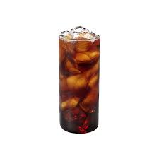
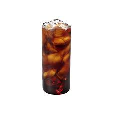

커피

커피는 전 세계적으로 많은 사람들이 즐기는 음료이며, 그 소비량은 날이 갈수록 늘어나고 있습니다. 커피를 마시는 것은 많은 이점을 제공할 수 있습니다. 여기에는 신체적, 정신적으로 다양한 이점이 포함되어 있습니다.
각성과 집중력 향상: 커피에 함유된 카페인은 중추 신경계를 자극하여 각성과 집중력을 향상시키는 데 도움이 됩니다. 이는 업무 또는 공부를 할 때 유용하며, 일상적인 활동에서 더 나은 성과를 이끌어낼 수 있습니다.
기억력 개선: 몇 가지 연구에 따르면, 적절한 양의 커피 소비는 기억력을 향상시킬 수 있다는 것이 밝혀졌습니다. 특히 중년 이상의 성인들에게 이점이 있을 수 있습니다.
운동 성능 향상: 카페인은 지구력을 향상시키고 근육 통증을 감소시키는 데 도움이 될 수 있습니다. 이는 운동 성능을 향상시키고 더 효율적인 운동 세션을 가능하게 합니다.
대사 활성화: 카페인은 신진 대사를 촉진하여 신체의 에너지 소비를 증가시키는 데 도움을 줄 수 있습니다. 이는 지방 연소를 촉진하고 체중 관리에 도움을 줄 수 있습니다.
스트레스 감소: 커피는 뇌 내의 화학적 신호를 변화시켜 스트레스 호르몬의 분비를 감소시킬 수 있습니다. 이는 일상적인 스트레스 상황에 대한 대처능력을 향상시키는 데 도움이 될 수 있습니다.
혈관 건강 개선: 커피에 함유된 항산화제는 혈관 건강을 개선시키는 데 도움이 될 수 있습니다. 일부 연구에 따르면, 적절한 양의 커피 소비는 심혈관 질환의 발병 위험을 줄일 수 있다는 것이 보고되었습니다.
우울증 예방: 커피 소비는 우울증 예방에 도움이 됩니다.
 
